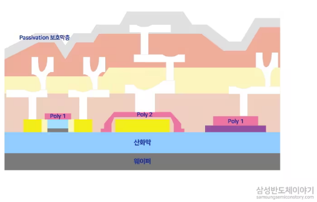

사전적 의미로 '박막(thin film)'이란, 단순한 기계 가공으로는 실현 불가능한 1μm(마이크로미터) 이하의 얇은 막을 뜻한다
웨이퍼 위에 원하는 분자 또는 원자 단위의 박막을 입히는 일련의 과정이다. 비유하자면 얇은 페인트 막을 아주 균일한 두께로, 그것도 눈에 보이지도 않는 미세한 홈 구석구석까지 빈틈없이 칠하는 작업과 비슷하다
두께가 워낙 얇기 때문에, 웨이퍼 위에 균일하게 박막을 형성하기 위해서는 정교하고 세밀한 기술력이 필요하다
박막은 크게 회로들 간 전기적인 신호를 연결해주는 금속막(전도)층과, 내부 연결층을 전기적으로 분리하거나 오염원으로부터 차단시켜주는 절연막층으로 구분된다

2. 물리적 방법(PVD)과 화학적 방법(CVD)
※ PVD는 고체 금속을 물리적으로 때려서 떼어낸 원자를 붙이고, CVD는 기체 원료가 웨이퍼 표면에서 화학반응을 일으켜 막을 만들며, ALD는 전구체를 한 번에 한 층씩 자기제한적으로 반응시켜 깊은 홈 내부까지 균일하게 코팅한다
① 물리적 기상증착방법 (PVD, Physical Vapor Deposition)
금속 박막의 증착에 주로 사용되며, 화학반응이 수반되지는 않는다
스퍼터링(Sputtering)
PVD의 한 종류다
플라즈마 이온으로 타겟 금속을 때려서, 튀어나온 원자를 웨이퍼에 증착하는 방식이다
금속 타겟 준비 → 이온으로 타격 → 금속 원자가 튀어나옴 → 웨이퍼에 달라붙음
스퍼터링 타겟 제조 업체 : 지오엘리먼트
② 화학적 기상증착방법 (CVD, Chemical Vapor Deposition)
가스의 화학 반응으로 형성된 입자들을, 외부 에너지가 부여된 기체 형태로 쏘아 증착시키는 방식이다
도체, 부도체, 반도체의 박막증착에 모두 사용될 수 있는 기술이다
현재 반도체 공정에서는 화학적 기상증착방법(CVD)을 주로 사용하고 있다
사용하는 외부 에너지에 따라 열 CVD, 플라즈마 CVD, 광 CVD로 세분화할 수 있다
플라즈마 CVD는 저온에서 형성이 가능하고 두께 균일도를 조절할 수 있으며, 대량 처리가 가능하다는 장점으로 가장 많이 이용되고 있다
③ 원자층 증착방법 (ALD, Atomic Layer Deposition)
원자층 단위로 아주 얇고 균일하게 박막을 증착하는 방식이다
PVD와 CVD 방법의 경우, 패턴이 깊고 좁아질수록 내부까지 균일하게 코팅하기 어렵다
특히 FinFET, 3D NAND, GAA 구조 같은 3D 구조에서는 깊은 구멍 내부까지 균일한 박막이 필요한데, 이때 ALD가 강력한 퍼포먼스를 보여준다
구분
PVD
CVD
ALD
원리
물리적 충돌로 원자 이동
기체의 화학반응
원자층을 한 층씩 반응·세척 반복
단차 피복성(Step Coverage)
낮음
중간
매우 높음(깊은 홈 내부까지 균일)
두께 제어
보통
양호
원자층 단위로 매우 정밀
속도
빠름
보통
느림
주 용도
금속 배선층
절연막 등 다양한 박막
3D 구조 내부 박막(FinFET 등)
④ 주요 업체
국내 : 원익IPS, 주성엔지니어링, TES, 유진테크(산화막)
🔍 개발자 노트 : 증착 두께·결함 검사와 머신비전
증착 공정 이후에는 산화 공정과 마찬가지로 박막의 두께와 균일도를 확인하는 것이 중요하다. 엘립소미터·반사분광 같은
광학 계측 장비로 웨이퍼 여러 지점의 두께를 측정하고, 컬러 카메라 기반 검사로 웨이퍼 전면의 색상 편차(두께 편차의
간접 지표)를 빠르게 스캔하기도 한다. 또한 증착 후에는 파티클, 핀홀, 박리(Peeling), 크랙 같은 결함을 브라이트필드/
다크필드 조합 AOI로 검출하며, 3D 구조 내부의 단차 피복성은 단면을 잘라 SEM으로 직접 들여다보는 방식(단면 SEM 분석)으로
검증하는 경우가 많다. 특히 ALD처럼 원자층 단위로 매우 얇게 쌓는 공정에서는 미세한 두께 편차도 소자 성능에 큰 영향을
주기 때문에, 계측·검사 장비의 정밀도 요구 수준이 계속 높아지고 있다.